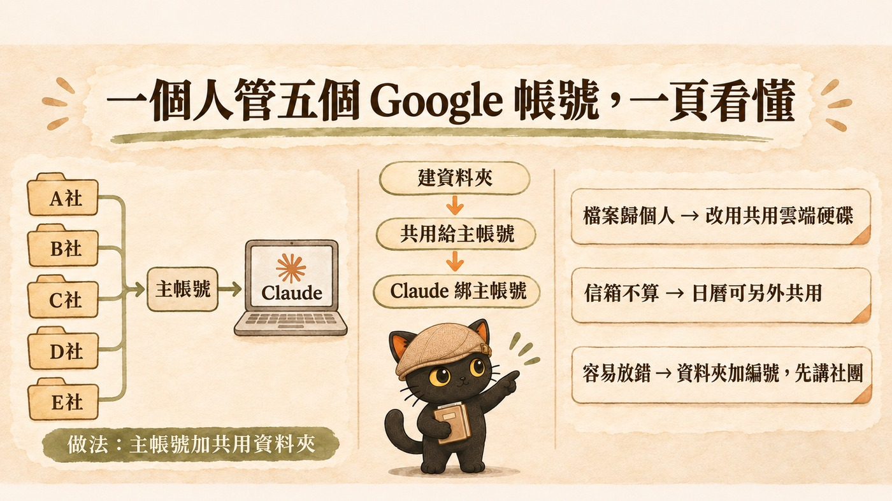
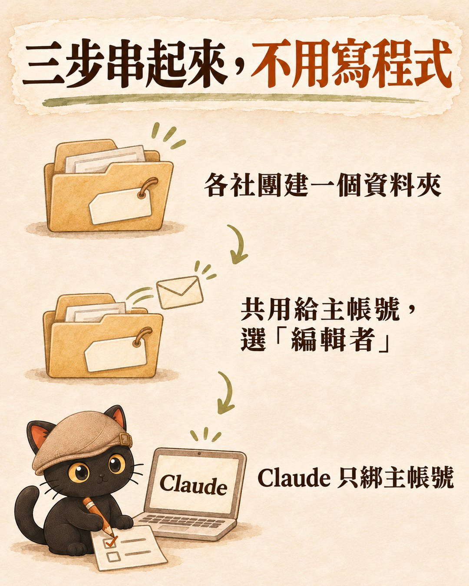
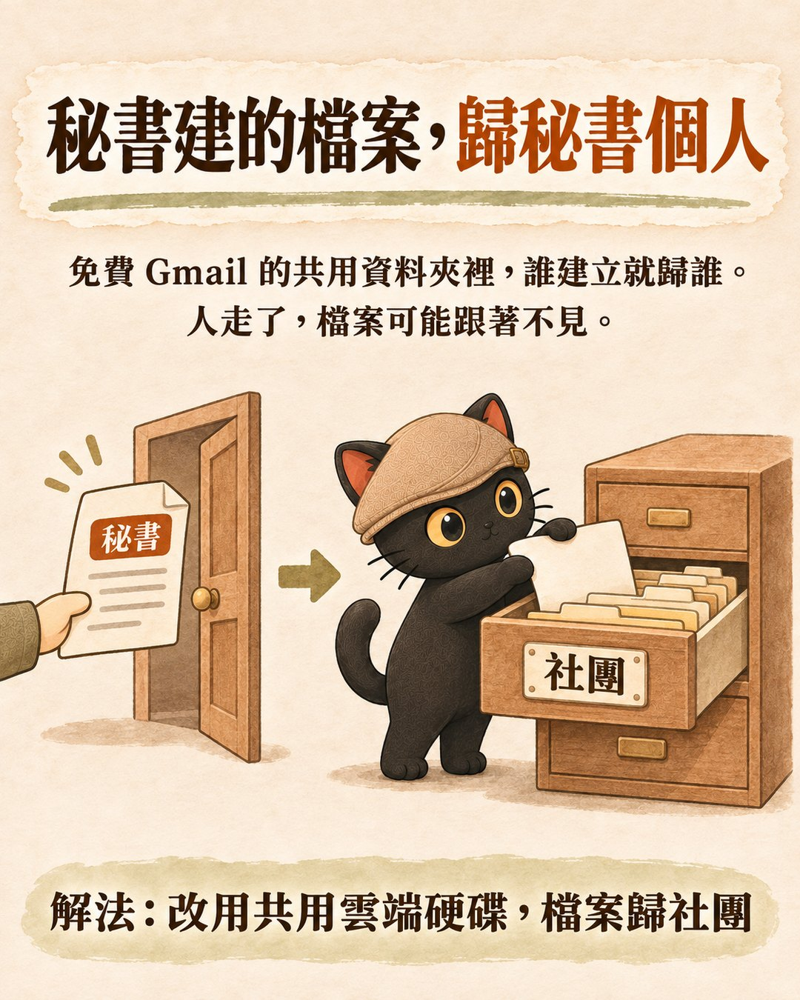
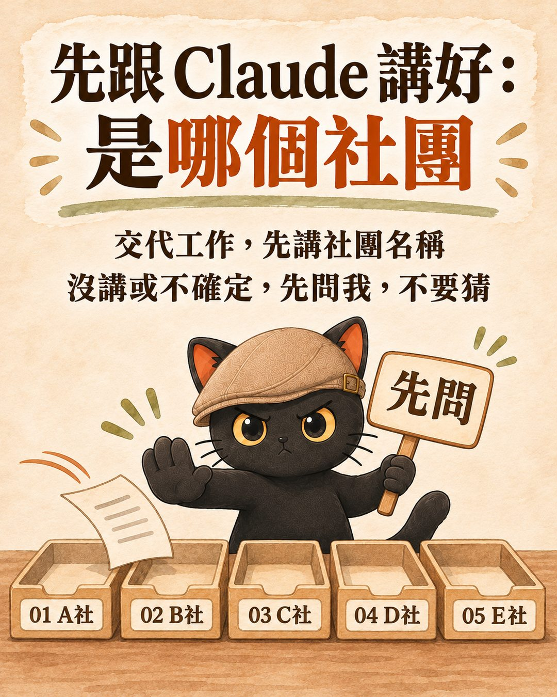

這篇在講什麼
一個人手上有好幾個 Google 帳號，例如一位行政秘書同時幫五個社團做事，每個社團各有一個帳號。想讓 Claude 幫忙整理雲端硬碟時會卡住，因為 Claude 內建的 Google 連接一次只綁一個帳號。這篇比較三種做法，推薦最不用碰技術的那一種：用一個主帳號，其他帳號把資料夾共用給它，Claude 只接主帳號。也把這個做法會踩到的三個坑先講清楚。
- 一個人身兼好幾個單位，有好幾個 Google 帳號，每次換帳號都要登出登入的人
- 想讓 Claude 幫忙整理雲端硬碟，卻發現一次只能接一個帳號的人
- 幫社團、協會、小公司規劃 AI 工具，要決定帳號怎麼分的顧問與行政主管
- 三種做法的比較表：要不要懂技術、要花什麼、會出什麼事
- 推薦做法的三個設定步驟，不用寫程式，加上設定完確認有沒有接好的小測試
- 一段可以直接貼給 Claude 的提示詞，避免它把 A 社的檔案放進 B 社

一、問題：五個社團、五個帳號，Claude 只能接一個
這題是有人直接問我的：
「Cloud Code 可以串這個雲端硬碟嘛？但我現在有一個人，他是行政秘書，假設他跑了五個社團，所以他有五個社團的 Google 帳號。那現在 Cloud 他去操作就是綁定一個，那他到底要怎麼樣可以同時去管這五個帳號？是以一個帳號為主，然後這個帳號有權限去協作其他帳號呢，還是可以五個帳號都授權給 Cloud Code？」
（原話是語音輸入，刪掉了「呃」這類語助詞；「Cloud」就是 Claude。）
先講答案：以一個帳號為主，其他帳號把資料夾共用給它。五個帳號同時授權給 Claude 內建的連接，目前做不到。
Claude 內建的 Google 連接（connector，就是讓 Claude 可以讀寫你 Google 資料的那個授權開關），一次只綁一個 Google 帳號。想換帳號，要先解除連接、再用另一個帳號重新授權。
二、三種做法比一比
| 做法 | 怎麼做 | 好處 | 代價與風險 |
|---|---|---|---|
| ① 主帳號加共用（推薦） | 五個社團各自把雲端硬碟資料夾，以「編輯者」權限共用給秘書的主帳號；Claude 只綁主帳號 | 不用碰技術；Claude 一次看得到五個社團；秘書離職時，各社團取消共用就收回 | 有三個坑，見第四段 |
| ② 多帳號連接工具或自架連線 | 用第三方的多帳號連接服務，或自己架 MCP 連線，每個帳號各授權一次 | 每個社團的帳號各自授權，不用把資料夾共用給別人 | 第三方服務：資料多經過一家公司，要先看懂它的隱私條款與收費。自己架：要到 Google 後台申請憑證，需要懂技術的人設定與維護 |
| ③ 電腦版 Google 雲端硬碟 | 在電腦裝 Google 雲端硬碟軟體，Claude Code 直接讀電腦裡的雲端硬碟資料夾 | 不靠 Claude 的連接功能 | 電腦版雲端硬碟最多同時登入 4 個帳號，五個社團剛好超過；只有裝了軟體的那台電腦能用 |
MCP 是 Model Context Protocol 的縮寫，可以想成讓 AI 接上外部服務的一種標準插座。內建連接也是走類似的路，只是 Anthropic 幫你做好了，所以只能照它的規格，一次一個帳號。
- 叫 AI 幫你點餐，就懂 CLI、API、MCP：這一段只講「自己架 MCP 要懂技術」，那篇把 MCP 跟 API、CLI 的差別拆成四層講清楚。
為什麼推薦 ①：如果做事的人不寫程式、身邊也沒有工程師，① 是三種裡最不需要技術人員的做法，自己就能設定、自己就能維護。② 比較適合有工程人員支援，或資料不能經過主帳號的單位。
三、主帳號加共用怎麼設定：三步加一個小測試

- 每個社團各建一個資料夾。名稱要一眼分得出來，例如「01 A社」「02 B社」。這一步在各社團自己的帳號裡做。
- 把資料夾共用給秘書主帳號。在雲端硬碟對資料夾按「共用」，輸入秘書主帳號，權限選「編輯者」。五個社團各做一次。
- Claude 只綁主帳號。在 Claude 的設定裡找到「連接器」（Connectors），用秘書主帳號登入 Google。共用進來的資料夾，在主帳號雲端硬碟的「與我共用」裡找得到。
秘書離職或換人時，各社團把共用對象改掉就好，不用交出社團帳號的密碼。
設定完先做一個小測試，確認 Claude 真的讀得到、寫得進去：
- 請 Claude 列出「與我共用」裡的資料夾，看五個社團是不是都在。
- 請它在其中一個社團的資料夾裡建一份測試文件。
- 到那個社團自己的帳號裡，確認看得到這份文件。
三步都過了再開始正式交代工作。哪一步不過，先回去檢查那個社團的共用權限是不是選了「編輯者」。
四、主帳號加共用的三個坑
坑一：秘書新建的檔案，擁有者是秘書個人
一般免費 Gmail 帳號的雲端硬碟，誰建立或上傳的檔案就歸誰，也算在那個人的儲存空間裡。資料夾是社團的，但秘書在裡面新建的檔案歸秘書。秘書離職、刪掉帳號，那些檔案可能跟著不見。
解法是讓社團改用 Google Workspace 的「共用雲端硬碟」。共用雲端硬碟裡的檔案屬於組織，人離開了檔案還在。Google 對符合資格的非營利組織提供免費的 Google Workspace for Nonprofits，裡面有共用雲端硬碟。台灣的社團能不能申請、要準備什麼文件，先看 Google 官方的「各國提供的產品」與資格說明頁再決定。

- 網域要去哪裡買？小編要給帳號密碼嗎？：這一段只講雲端硬碟檔案歸誰，那篇講更大的原則：金流與帳號權限握在自己手上，其他都能交出去。
坑二：只解決雲端硬碟，信箱不算
共用資料夾解決的是檔案。五個社團的 Gmail 信件，Claude 還是只讀得到主帳號那一個。行事曆可以另外處理：每個社團把自己的 Google 日曆共用給秘書主帳號，權限選「變更活動」，主帳號接受共用之後，就能看到也能改那個社團的活動。設成「只有我」看得到的私人活動，共用之後還是看不到。
坑三：Claude 容易放錯社團
五個社團的資料夾都在同一個帳號底下，對 Claude 來說只是五個資料夾。資料夾名稱取得不清楚，或交代工作時沒講是哪個社團，它可能把 A 社的會議紀錄存進 B 社。解法是名稱加編號，再給 Claude 一段固定規則（下一段）。
五、可以直接貼給 Claude 的提示詞

設定好之後，第一次跟 Claude 合作時先貼這段：
我的 Google 雲端硬碟「與我共用」裡，有五個社團共用給我的資料夾： 01 A社、02 B社、03 C社、04 D社、05 E社（請換成實際名稱）。 規則： 1. 我交代工作時會先講是哪個社團。你只能讀寫那個社團的資料夾。 2. 我沒講是哪個社團，或你不確定，先問我，不要猜。 3. 要把資料從一個社團搬到另一個社團之前，先跟我確認。 4. 新建檔案前，告訴我會存在哪個資料夾。
都不做的話：秘書每次換社團，就要在 Claude 裡解除連接、換另一個帳號重新登入。跨社團的整理，例如五個社團的年度活動總表，只能一個社團一個社團分次處理，再自己拼起來。
- 叫 AI 幫你點餐，就懂 CLI、API、MCP：MCP 是什麼、跟 API 差在哪
- 網域要去哪裡買？小編要給帳號密碼嗎？：帳號權限握在自己手上
- Meta 廣告後台可以整段交給 AI 嗎？：另一個用 Claude 自訂連接器接外部服務的實例，看授權頁怎麼留給本人按
- API key 可以貼給 AI 嗎？：接服務時遇到金鑰，怎麼不經過對話
給你的 AI 讀的技術備忘（人可以跳過）
- Claude 內建 Google 連接：一個 Claude 帳號同時只授權一個 Google 身分，換帳號需解除後重新授權。Anthropic 官方說明 Use connectors 未寫明帳號上限；第三方說明（Composio、Carly）講法一致，兩家都是賣多帳號連接服務的廠商。2026-11-11 查證。
- 電腦版 Google 雲端硬碟同時最多 4 個帳號：Google 雲端硬碟說明。
- 檔案擁有者與儲存空間：在別人共用的資料夾中新建或上傳的檔案，擁有者是上傳者，算上傳者的容量：Google 儲存空間的運作方式。
- 共用雲端硬碟檔案屬於組織、成員離開仍保留；Nonprofits 版含共用雲端硬碟：Google Workspace for Nonprofits 版本、非營利版方案資格。台灣是否在可申請國家名單，本次未在官方頁確認。
- Google 日曆共用給特定使用者與「變更活動」權限：與特定使用者共用日曆。
判斷不出來用哪一種做法，把這段話貼給你的 AI：
我有 N 個 Google 帳號，想讓 Claude 同時處理它們的雲端硬碟。 我會不會寫程式：＿ 資料要不要嚴格分開：＿ 能不能接受資料經過第三方服務：＿ 請依「一個人管五個 Google 帳號，Claude 要怎麼一次串起來？」這篇的三種做法幫我判斷用哪一種，並列出我要做的步驟。